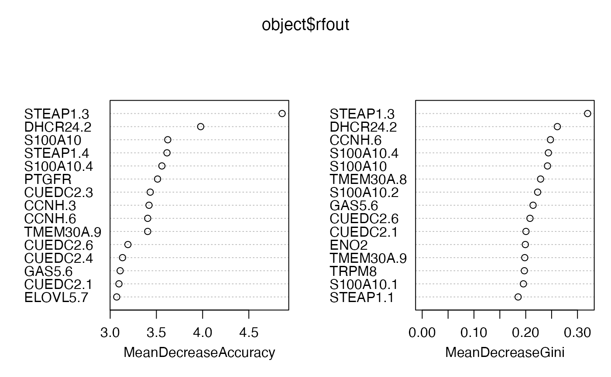

meffilTools.RmdThe meffil package (Min et al. (2018)) for Illumina Infinium methylation array analysis produces functionally normalized signal estimates in a memory-sparing disk format, GDS.
The GDS format requires additional infrastructure for simple downstream manipulation. We’ve converted all the betas to chromosome-specific HDF5 SummarizedExperiments.
An example HDF5 SummarizedExperiment is provided with the pidsleyEPICData package. The raw data are from NCBI GEO GSE86831, as described in Pidsley et al. (2016).
suppressPackageStartupMessages({
library(HDF5Array)
library(SummarizedExperiment)
library(meffilTools)
library(DelayedMatrixStats)
library(BiocSingular)
library(randomForest)
library(TxDb.Hsapiens.UCSC.hg19.knownGene)
library(org.Hs.eg.db)
library(pidsleyEPICData)
})
pidsSE = pidsleyEPICData::pidsleyData(FALSE)
pidsSE## class: RangedSummarizedExperiment
## dim: 846232 15
## metadata(0):
## assays(1): betas
## rownames(846232): cg14817997 cg26928153 ... cg07660283 cg09226288
## rowData names(0):
## colnames: NULL
## colData names(9): Sample_Name Sample_Well ... Basename Sex
assay(pidsSE)## <846232 x 15> matrix of class DelayedMatrix and type "double":
## [,1] [,2] [,3] ... [,14] [,15]
## cg14817997 0.7789272 0.8155561 0.7164569 . 0.5773467 0.7401255
## cg26928153 0.9467096 0.9481201 0.9028903 . 0.9038258 0.8960001
## cg16269199 0.8725490 0.8803706 0.7796930 . 0.7817547 0.7756640
## cg13869341 0.8909318 0.8654525 0.8421502 . 0.8219929 0.8620466
## cg14008030 0.6627212 0.7052351 0.6830013 . 0.5262791 0.5069644
## ... . . . . . .
## cg16817496 0.13411024 0.14831004 0.08803999 . 0.1791183 0.2126328
## cg15964525 0.89694635 0.89705107 0.81047270 . 0.8144210 0.8364056
## cg05111475 0.87763399 0.89074500 0.76547307 . 0.7678049 0.8236551
## cg07660283 0.84969323 0.80442862 0.61971544 . 0.7302855 0.7594152
## cg09226288 0.70827453 0.75876353 0.62220802 . 0.4861417 0.6151339Fifteen arrays are provided in raw form at GSE86831. Biological source types are labeled in Sample_Group.
table(pidsSE$Sample_Group)##
## CAF Guthrie LNCaP NAF PrEC
## 3 5 2 3 2“CAF” and “NAF” refer to paired samples of tumor-associated or normal fibroblasts. “LNCaP” refers to a transformed prostate cancer cell line. “PrEC” denotes primary cell culture of prostate epithelial cells. “Guthrie” samples are infant blood derived from “archival Guthrie cards.”
Throughout the remainder, we will assume that the default processing of the arrays by meffil produces adequate estimates of “beta” for CpGs on the array.
We use nlme::gls. A function must be defined to derive a suitable data.frame from the assay results for a feature. An example is shown below.
library(HDF5Array)
library(SummarizedExperiment)
makedf_simple = function(se, ...) {
stopifnot(nrow(se)==1)
data.frame(beta=as.numeric(SummarizedExperiment::assay(se)),
id=as.numeric(factor(se$Sample_Group)))
}
get_iccs(pidsSE, inds=51:60, makedf.in=makedf_simple, fixedfmla = beta~1)## cg10037654 cg14057946 cg11422233 cg16047670 cg18263059 cg01014490
## 0.94134271 0.85556159 0.46110075 0.06809834 0.06478950 -0.25000000
## cg11731845 cg04231937 cg04496485 cg24063007
## 0.09079412 0.05644596 0.67231419 -0.25000000We can elaborate the GDS model by changing the makedf and fixedfmla.
makedf_celltype = function(se, ...) {
stopifnot(nrow(se)==1)
data.frame(beta=as.numeric(SummarizedExperiment::assay(se)),
ngc=factor(!(se$Sample_Group %in% c("Guthrie", "CAF"))),
id=as.numeric(factor(se$Sample_Group)))
}
get_iccs(pidsSE, inds=51:60, makedf.in=makedf_celltype, fixedfmla = beta~ngc)## cg10037654 cg14057946 cg11422233 cg16047670 cg18263059 cg01014490
## 0.94182586 0.87547233 0.54519607 -0.03365774 -0.25000000 -0.25000000
## cg11731845 cg04231937 cg04496485 cg24063007
## 0.20760962 -0.01463034 0.72962983 -0.25000000This illustrates the sensitivity of ICC estimation to the model for the mean response.
Selection of useful features can proceed by many avenues.
We’ll use approximate principal components analysis (PCA to 6 components via the “implicitly restarted Lanczos bidiagonalization algorithm” in the irlba package, interfaced in BiocSingular) to look at adequacy of small numbers of probes for discriminating the cell types in the Pidsley dataset.
allm = rowMads(assay(pidsSE))
omads = order(allm, decreasing=TRUE)
top50 = pidsSE[omads[seq_len(50)],]
dim(top50)## [1] 50 15The rept_filtse function will compute approximate PCA and will use random forests to measure discriminative capacity in selected features.
set.seed(1234)
o50 = rept_filtse(top50)
summary(o50)##
## Call:
## randomForest(formula = y ~ ., data = newdf, importance = TRUE)
## Type of random forest: classification
## Number of trees: 500
## No. of variables tried at each split: 7
##
## OOB estimate of error rate: 13.33%
## Confusion matrix:
## CAF Guthrie LNCaP NAF PrEC class.error
## CAF 2 0 0 1 0 0.3333333
## Guthrie 0 5 0 0 0 0.0000000
## LNCaP 0 0 2 0 0 0.0000000
## NAF 1 0 0 2 0 0.3333333
## PrEC 0 0 0 0 2 0.0000000The biplots show that PrEC, LNCaP, and Guthries cells can be distinguished, and replicates grouped well together, using PC1 and PC2 on 50 probes, but NAF and CAF cells are grouped together.
pidsSE_p = subset_to_promoters(pidsSE)
pmads = rowMads(assay(pidsSE_p))
opmads = order(pmads, decreasing=TRUE)
top50_p = pidsSE_p[opmads[seq_len(50)],]
o50_p = rept_filtse(top50_p)
summary(o50_p)##
## Call:
## randomForest(formula = y ~ ., data = newdf, importance = TRUE)
## Type of random forest: classification
## Number of trees: 500
## No. of variables tried at each split: 7
##
## OOB estimate of error rate: 6.67%
## Confusion matrix:
## CAF Guthrie LNCaP NAF PrEC class.error
## CAF 3 0 0 0 0 0.0000000
## Guthrie 0 5 0 0 0 0.0000000
## LNCaP 0 0 2 0 0 0.0000000
## NAF 1 0 0 2 0 0.3333333
## PrEC 0 0 0 0 2 0.0000000 Some annotation of CpG probes of interest is available in epic_granges.
epic_granges[c("cg00451642", "cg14674796")]## GRanges object with 2 ranges and 2 metadata columns:
## seqnames ranges strand | isl_class in_prom
## <Rle> <IRanges> <Rle> | <character> <character>
## cg00451642 chr15 66546935 - | S_Shore MEGF11
## cg14674796 chr17 70115831 + | N_Shore SOX9
## -------
## seqinfo: 24 sequences from hg19 genome; no seqlengthsIn this section we use a set of genes identified in Romanuik et al. (2010) defining an “LNCaP Atlas.” Our anticipation is that CpG probes in these genes will help isolate the LNCaP samples from the others.
lncap_activ = c("DHRS7", "GAS5", "PSMA7", "ELOVL5", "ENO2", "DHCR24", "FLNA",
"TMEM30A", "CCNH", "TRPM8", "MAOA", "OPRK1", "S100A10", "CUEDC2",
"HSD17B4", "STEAP1", "PTGFR", "PCGEM1")
data(epic_granges)
pidsSE_p = subset_to_promoters(pidsSE)
inlac = epic_granges[which(epic_granges$in_prom %in% lncap_activ)]
ok = intersect(names(inlac), rownames(pidsSE_p))
inlacSE = pidsSE_p[ok,]
rownames(inlacSE) = make.names(rowRanges(inlacSE)$symbol, unique=TRUE)
olac = rept_filtse(inlacSE)
summary(olac)##
## Call:
## randomForest(formula = y ~ ., data = newdf, importance = TRUE)
## Type of random forest: classification
## Number of trees: 500
## No. of variables tried at each split: 9
##
## OOB estimate of error rate: 53.33%
## Confusion matrix:
## CAF Guthrie LNCaP NAF PrEC class.error
## CAF 0 0 0 3 0 1
## Guthrie 0 5 0 0 0 0
## LNCaP 0 0 2 0 0 0
## NAF 3 0 0 0 0 1
## PrEC 0 0 0 2 0 1
The marginal distributions of betas in promoter regions of several of these genes clearly distinguish LNCaP.